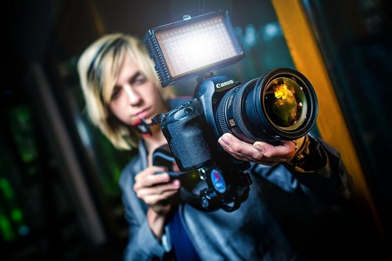
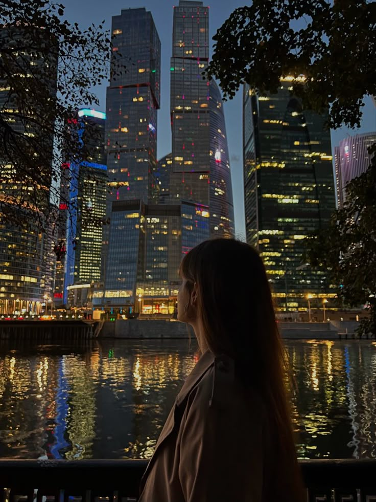

Photo Gallery
Сайт для публикации фотографий — заказ друга, от идеи до деплоя
Задача
Друг попросил сайт, куда он сможет выкладывать свои фотографии — без соцсетей, со своей подачей.
Что сделано
- Свёрстан адаптивный макет: сетка фотографий перестраивается под мобильные экраны.
- Подключена галерея с полноэкранным просмотром фотографии.
Как выглядит


Итог
Здесь я впервые собрал сайт от идеи до деплоя один. Понял, что вёрстка — это не только HTML и CSS, но и порядок файлов, ссылки и деплой. Если бы начинал заново, заранее продумал бы структуру папок.